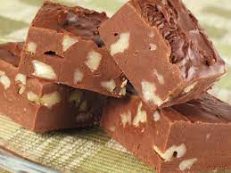

çikolatalı ve şam fıstıklı tadımlık lezzetler... Yalnızca 4 adet malzeme ile hazırlanan çikolata küpleri, renkli kağıtlarda veya kürdan batırılarak servis edilir. Özellikle kalabalık sofralada yer verilen çikolata küpleri,doğum günü gibi özel etkinliklerde de sunulabilir.
Tarif:Hatice KATRANCI
- 
-
Kaç kişilik: 4 kişilik Hazırlama süresi: 30 dakika Pişirme süresi: 10 dakika
- 350 gr bitter çikolata
- 150ml krema
- 1 çorba kaşığı tereyağı
- 150 gr şamfıstık (Badem veya fındık da olabilir)
- Bitter çikolatayı benmari usulü eritin
- Eriyen çikolatanın üzerine krema ve tereyağını ekleyip iyice karıştırıp tencereyi bir tezgaha alın.
- Şamfıstıkları havanda çok az dövüp irirli ufaklı parçalara bölün.
- Ufalanan fıstıkları çikolatalı karışıma ekleyip karıştırın.
- Hazırladığınız çikolatayı varsa alüminyum hazır bir kare tepsiye , yoksa kerlarından taşarak yağlı kağıt yerleştirdiğiniz küçük bir tepsiye dökün
- Buzdolabında iki saat bekletin.
- Çİkolatyı kalıptan çıkarın.Kare parçalara bölün.